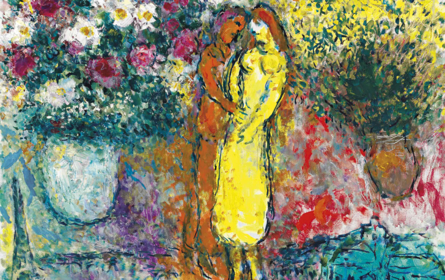
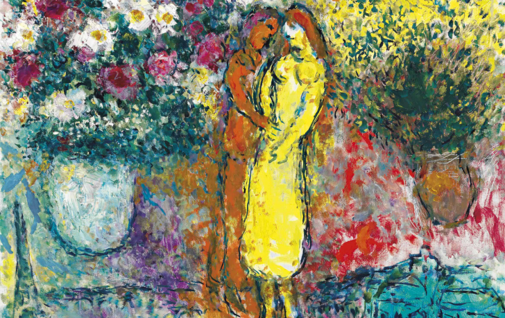

PAUL DECHEWSKY
M. Dechewsky, grand amateur d'art et propriétaire de la collection Le Jardin des Couleurs, incarne une existence dédiée à la célébration artistique. Son parcours l'a mené à constituer une collection exceptionnelle, soigneusement sélectionnée pour refléter la beauté de la vie à travers l'art. Le Jardin des Couleurs vous invite à plonger dans un univers sensible à travers le regard de M. Dechewsky, en vous offrant l'occasion d'explorer des œuvres qui traversent les époques et éveillent des émotions profondes.


 
